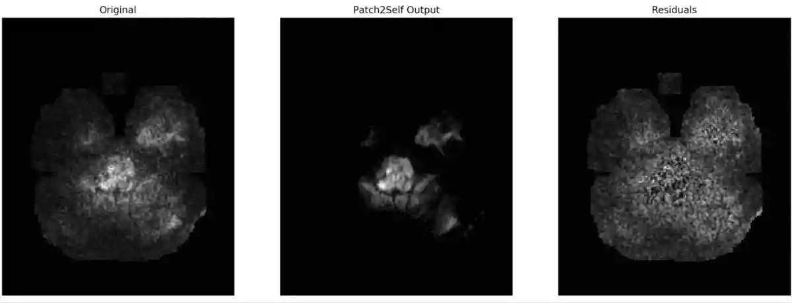
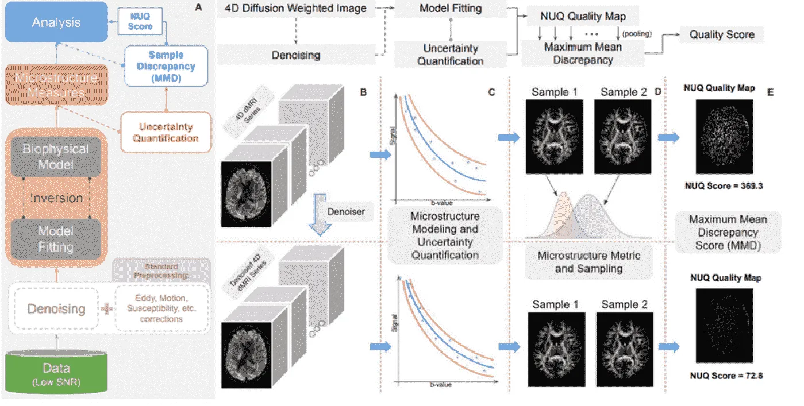
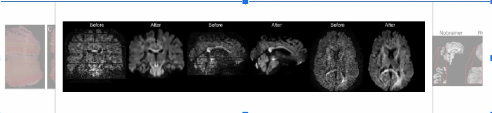
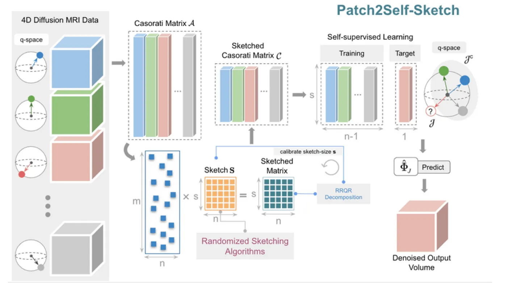
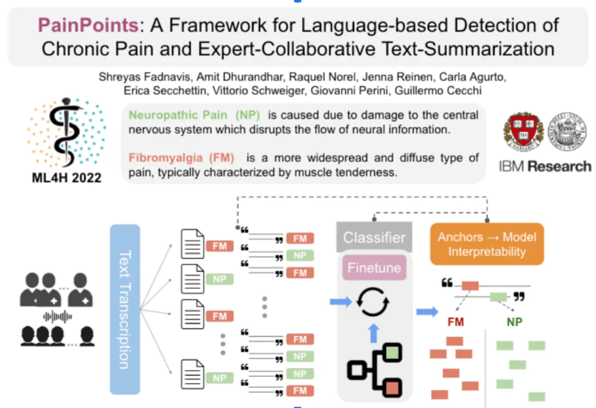
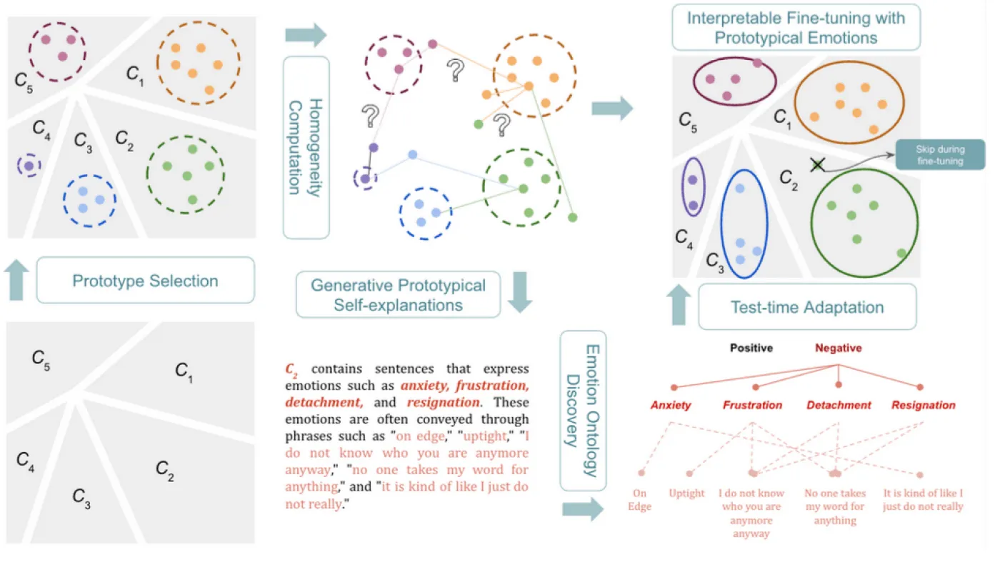
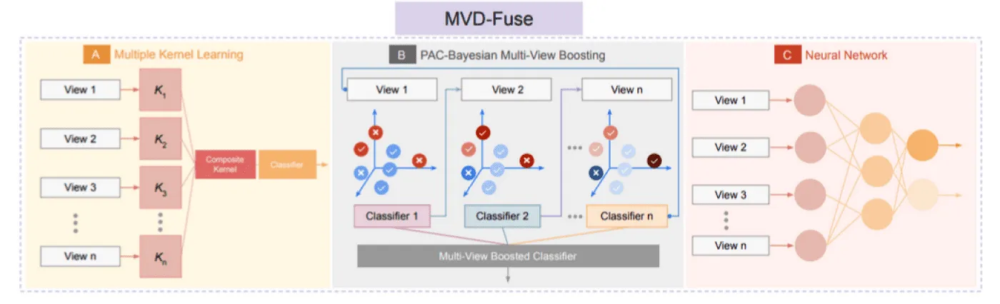

Patch2Self: Denoising Diffusion MRI with Self-Supervised
Learning”, Thirty-fourth Conference on Neural Information Processing Systems, (NeurIPS), 2020
Raw Data
Patch2Self
Noise Removed

“ViewFormer: a View-Independent Transformer Model for Disease Detection from
Transthoracic Echocardiograms”, under review, 2024
"QSIPrep: An integrative platform for preprocessing and reconstructing diffusion
MRI”, Nature Methods, 2021
“Bifurcated Topological Optimization of IVIM”, Frontiers in Neuroscience, Brain
Imaging Methods, 2021
“Patch2Self-Sketch: Self-supervised Denoising on Coresets via Matrix Sketching”,
under submission, 2023
Self supervised Learning and Imaging Denoising
“Denoising of diffusion MRI in the cervical spinal cord– effects of denoising
strategy and acquisition on intra-cord contrast, signal modeling, and feature conspicuity”,
NeuroImage, 2022
“NUQ: A noise metric for diffusion MRI via uncertainty discrepancy
quantification”, Machine Learning for Health, 2022

“Effect of Denoising on Retrospective Harmonization of Diffusion Magnetic
Resonance Images”, Neural Information Processing Systems (MedNeurIPS), 2022
“Patch2Self: Denoising Diffusion MRI with Self-Supervised Learning”, Thirty-fourth
Conference on Neural Information Processing Systems, (NeurIPS), 2020
"QSIPrep: An integrative platform for preprocessing and reconstructing diffusion
MRI”, Nature Methods, 2021
"Dipy, a library for the analysis of diffusion MRI data." Frontiers in
neuroinformatics 8, 2014

“Patch2Self-Sketch: Self-supervised Denoising on Coresets via Matrix Sketching”,
under submission, 2023

NLP, LLMs and Computational Psychiatry
“PainPoints: A Framework for Language-based Detection of Chronic Pain and
Expert-Collaborative Text-Summarization”, Machine Learning for Health, 2022

“Interpretable Specificity of Psychoactive Drug Effects in Informal Dialogue Using
Large Language Models.” Biological Psychiatry, 2023
“PrompType: Prompting Large Language Models with Prototypes”, under review, 2023

Multi-view Learning, Combinatorial Topology and other
Methods
“MVD-Fuse: Detection of White Matter Degeneration via Multi-View Learning of
Diffusion Microstructure”, NeurIPS, 2020

“Bifurcated Topological Optimization of IVIM”, Frontiers in Neuroscience, Brain
Imaging Methods, 2021
“Variable Projection Optimization for Intravoxel Incoherent Motion (IVIM) MRI
estimation”, MedNeurIPS, 2019
“EVAC+: Multi-scale V-net with Deep Feature CRF Layers for Brain Extraction”,
under review, 2023 - ISMRM’23 Oral.
“A Linear Complexity Simplicial Complex Data Structure for Fast Homology and
Boundary Computation”, under submission, 2023